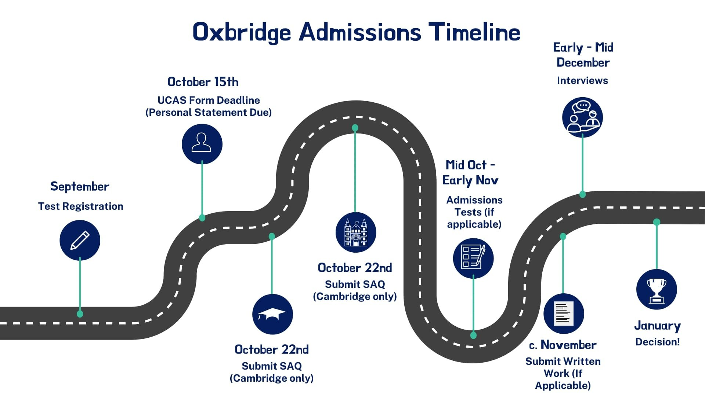

Enhancing Interdepartmental Communication for Oxbridge Admissions
Evaluating Support Systems
Addressing chronic interview failures at a prestigious Cambridge-curriculum high school in China
This research project evaluated support systems for students applying to Oxford and Cambridge at a prestigious Cambridge-curriculum high school in China. The study aimed to address chronic interview failures despite strong academic credentials, which were rooted in cultural and communication barriers between departments.
Research Methodology
Mixed-Methods Approach:
Teachers Surveyed
Students Interviewed
Principal Participation
Focus Areas: Student identification processes, academic/oral communication preparation, interdepartmental coordination
Research Instruments
Survey instruments and research report:
Research Process
- Conducted comprehensive case study at a Chinese international school following Cambridge curriculum
- Designed survey instruments for students and faculty
- Administered surveys to 11 teachers and 8 students
- Performed in-depth interviews with Center Principal
- Analyzed data to identify communication barriers
- Developed interventions for three schools based on findings
- Implemented frameworks at Tianjin FLS, Tsinghua International, and Delta Global
- Evaluated outcomes through performance metrics
Research Outcomes
Key Findings
73%
No formal candidate process
100%
Students felt underprepared
72%
Needs improvement
64%
Unsatisfactory process
Implementation Impact
Tianjin Foreign Language School (TFLS)
- Collaboration between English/Humanities faculty and counseling teams
- Interview simulations and personal statement workshops
- 300% Increase: Teacher-counselor meeting frequency
Tsinghua International School
- High School Handbook redesigned to formalize counseling integration
- "University Readiness" modules in homeroom curricula
- 100% Adoption: Integrated materials in Grade 10-12 homerooms
Delta Global School (DGS)
- Restructured advisory programs with counselor co-facilitation
- "Application Skill Builders" with subject teachers
- 92% Satisfaction: Students reporting practical university-prep focus
"These initiatives operationalized my research finding that structured communication channels between departments are non-negotiable for elite university success. At each school, we moved from fragmented support to cohesive preparation ecosystems."